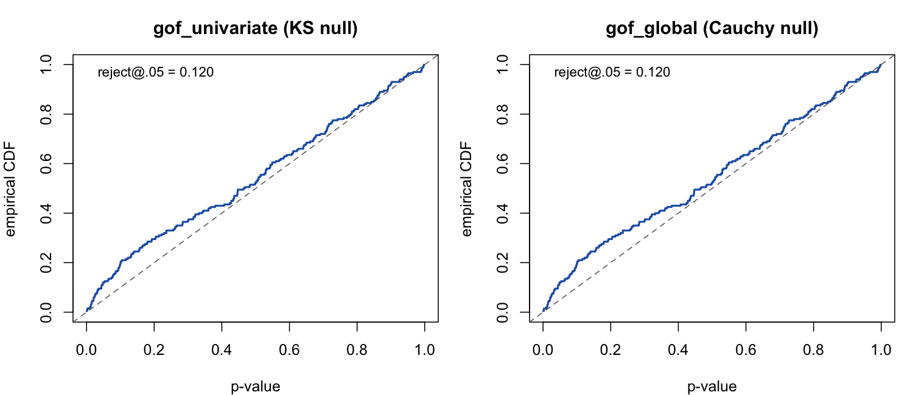

Goodness-of-fit calibration
The martingale-residual goodness-of-fit family
(gof_univariate(), gof_global(),
gof_auxiliary(), martingale_residuals())
reports p-values against an analytic null. This article documents an
empirical study of when those p-values are exact and when they
should be read as diagnostic. In short: the tests are well
calibrated under the null and for bounded statistics, and
become anti-conservative for unbounded count statistics in the
presence of a real effect. This is a finite-sample property of the test,
not a coding error — but it changes how the tests should be used.
Method. A type-I error-rate study under correct
specification: simulate from a model, fit the same
model, and collect GoF p-values. Under a calibrated test these are
Uniform(0, 1), so the empirical rejection rate at level α should equal
α. Settings below use a 20-actor one-mode network, the Gillespie
simulator, 1{,}500 events and 150 replicates per cell unless stated, and
a single control per case (the m = 2 design the GoF
uses).
library(amorem)
actors <- paste0("a", 1:20)
# one replicate under correct specification: simulate with a known effect,
# fit the same linear model, return the gof_univariate p-value
gof_rep <- function(i, beta, stat = "reciprocity_count", half_life = NULL) {
set.seed(70000L + i)
ev <- simulate_relational_events(
n_events = 1500, senders = actors, receivers = actors,
endogenous_stats = stat, endogenous_effects = setNames(beta, stat),
half_life = half_life, method = "gillespie")
gof_univariate(ev, model = setNames("linear", stat), covariate = stat,
half_life = half_life, seed = 90000L + i)$p_value
}
type_I <- function(beta, ...) {
p <- vapply(1:150, gof_rep, numeric(1), beta = beta, ...)
c(rejection_05 = mean(p < 0.05), ks_uniformity = ks.test(p, "punif")$p.value)
}Calibrated under the null
With no true effect the test is calibrated (indeed mildly conservative), and the p-values pass a uniformity check:
| true β | type-I @ .05 | p-value uniformity (KS) |
|---|---|---|
| 0.0 | 0.013 | 0.61 |
| 0.1 | 0.027 | — |
Anti-conservative for counts with a real effect
Once a real moderate effect is present, the rejection rate climbs above nominal — and it is not driven by numerical separation in the fit (at β = 0.2 essentially no strata are separated):
true β (reciprocity_count) |
type-I @ .05 | mean separation |
|---|---|---|
| 0.0 | 0.013 | 0.00 |
| 0.2 | 0.147 | 0.01 |
| 0.3 | 0.213 | 0.33 |
| 0.5 | 0.107 | 0.68 |
The empirical CDF of the p-values bows above the diagonal at small p — the signature of over-rejection:

The driver is the nature of the covariate, not its scale. At a matched moderate effect (β = 0.2, negligible separation):
| covariate | nature | type-I @ .05 |
|---|---|---|
recency |
bounded, resets | 0.053 |
reciprocity_exp_decay |
bounded by decay | 0.093 |
reciprocity_count |
unbounded accumulating count | 0.147 |
type_I(0.2, stat = "recency")
type_I(0.2, stat = "reciprocity_exp_decay", half_life = 5)
type_I(0.2, stat = "reciprocity_count")A bounded statistic calibrates; an unbounded count does not. The cumulative-residual-process asymptotics require each event’s increment to be negligible relative to the whole, and an accumulating count becomes heavy-tailed late in the stream (a few late, high-count events dominate the process), which violates that condition.
What does not fix it
| attempted remedy | type-I @ β = 0.2 | outcome |
|---|---|---|
scale() the covariate |
0.147 | no change — the test normalises by the residual variance, so any linear rescaling cancels exactly |
log1p() / sqrt() the covariate |
0.88 / 0.88 | worse — transforming the term misspecifies a linear-in-count truth, and the test correctly rejects |
| multiplier-bootstrap null | 0.113 | partial only |
| parametric bootstrap (re-simulate under β̂, refit) | 0.158 | no improvement (≈ analytic 0.158) |
The parametric bootstrap is the decisive test: it is the most
principled reference distribution available — it re-simulates under the
fitted null and re-fits, fully accounting for the estimation effect.
Because it over-rejects identically to the analytic null (R =
120: both 0.158, 95% CI 0.098–0.236; p-values fail uniformity, KS p =
0.008), the problem is not the null-distribution
approximation. The observed statistic is genuinely larger than the
fitted model predicts — a real finite-sample lack-of-fit of the
case-1-control (m = 2) construction for count covariates
with a true effect.
Guidance and outlook
-
Use under the null and for bounded statistics
(
recency, the decayed variants): the p-values are trustworthy. -
For raw, unbounded count statistics with a real
effect, read the GoF as a diagnostic — inspect
the cumulative residual process and
martingale_residuals()— rather than relying on the exact p-value, which is anti-conservative (type-I ≈ 0.15 at the settings above). -
Open direction. A proper fix is a methods question
rather than a one-line patch. The most promising candidate is a
multi-control (risk-set / softmax) GoF in place of the
single-control
m = 2degenerate binomial (the GoF currently fixesn_controls = 1), or a Khmaladze martingale transform that removes the estimation effect from the residual process. Quantifying the rejection rate as the number of controls grows is the natural next experiment.
See the Estimation guide for the GoF API and Validation experiments for the recovery and parity studies (E1–E7).